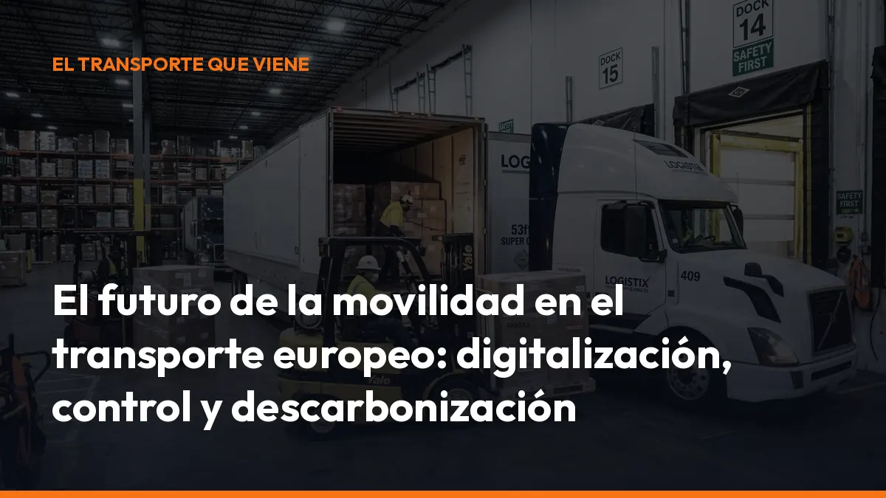

El futuro de la movilidad en el transporte europeo: digitalización, control y descarbonización

La carretera europea será más conectada, más controlada y más sostenible. La documentación en papel perderá protagonismo. Los controles utilizarán datos digitales. El ferrocarril y el transporte marítimo ganarán peso. Y las empresas que se adapten antes trabajarán con menos errores, menos trámites y más trazabilidad.
Para ti, el cambio tiene una fecha inmediata:
El 5 de octubre de 2026, el Documento de Control Administrativo (DeCA) deberá gestionarse en formato digital en España.
La transición no consiste solo en cambiar un papel por una pantalla. Supone modificar la forma de emitir, firmar, conservar y presentar la documentación durante una ruta.
La respuesta es sencilla: digitaliza tus documentos desde hoy con Mi Carga.
La movilidad europea será digital por obligación y por eficiencia
La Unión Europea considera la digitalización un elemento esencial para conseguir una movilidad más segura, eficiente y sostenible. La inteligencia artificial, el internet de las cosas, la nube y las redes 5G permitirán conectar vehículos, infraestructuras, operadores y autoridades.
Consulta la visión de la Comisión Europea sobre la digitalización del transporte.
En la práctica, esto significa:
- Datos conectados: la información del envío estará disponible para los distintos participantes autorizados.
- Menos papel: los documentos podrán emitirse, firmarse y consultarse desde el móvil.
- Más trazabilidad: cada operación tendrá un historial digital verificable.
- Controles más rápidos: el inspector podrá comprobar la información sin revisar carpetas físicas.
- Menos errores: los datos estructurados reducen documentos ilegibles, incompletos o extraviados.
La Comisión Europea estima que la documentación electrónica puede liberar millones de horas administrativas y reducir costes para el conjunto de la cadena logística. Para una empresa pequeña o un autónomo, el beneficio es directo: menos tiempo rellenando documentos y más tiempo trabajando.
Empieza antes de que llegue la fecha límite
No esperes a octubre para descubrir que tu sistema no genera un PDF válido, no conserva los documentos o no permite mostrar la información durante una inspección.
Con Mi Carga, puedes crear tus primeros 10 transportes gratis, sin tarjeta y sin compromiso.
DeCA electrónico: el cambio más inmediato en España
La Ley 9/2025 de Movilidad Sostenible y el desarrollo normativo del Documento de Control Administrativo marcan el final del papel en el transporte público de mercancías por carretera.
A partir del 5 de octubre de 2026, el DeCA deberá emitirse y conservarse digitalmente. La Resolución de 5 de junio de 2026 publicada en el BOE establece requisitos técnicos concretos.
Tu solución debe permitir:
- Generación digital: crea el documento a partir de datos, no mediante un escaneo.
- Firma electrónica: completa las firmas necesarias antes de iniciar el servicio.
- Código QR: muestra una URL única para consultar el documento.
- Disponibilidad inmediata: enseña el DeCA desde el móvil durante un control.
- Trazabilidad: conserva la fecha y hora de creación y modificación.
- Custodia: guarda los documentos durante el periodo exigido.
- Copia para el conductor: permite que el profesional disponga del documento antes de salir.
Con Mi Carga puedes generar el documento de control y la carta de porte desde el móvil, descargar el PDF y mantener todos tus portes organizados en la nube.
e-CMR y digital transport documents: una misma dirección europea
El e-CMR es la versión electrónica de la carta de porte internacional por carretera. Su objetivo es sustituir el documento físico por información digital que puedan utilizar transportistas, cargadores, destinatarios y autoridades.
El Reglamento europeo eFTI impulsa precisamente esta transformación. Su finalidad es facilitar el intercambio de información regulatoria en formato electrónico mediante plataformas seguras e interoperables.
La evolución será progresiva:
1. Digitalización de documentos nacionales, como el DeCA en España. 2. Aceptación electrónica por las autoridades en los controles. 3. Interoperabilidad entre plataformas de distintos países. 4. Uso generalizado del e-CMR en las operaciones internacionales. 5. Integración de documentos, datos de ruta y trazabilidad en un mismo entorno.
Por eso, el concepto de digital transport documents dejará de ser una ventaja tecnológica para convertirse en el estándar operativo del transporte europeo.
Para ti, el resultado será práctico:
- Presentar documentos desde el teléfono.
- Compartir información sin enviar correos continuamente.
- Reducir duplicidades entre conductor y oficina.
- Acelerar la confirmación de entregas.
- Facilitar la facturación y el archivo.
El Reglamento eFTI y la digitalización del transporte ya están acelerando este cambio.
Más control y normas homogéneas para las mercancías peligrosas
El transporte europeo también avanza hacia una aplicación más uniforme de las reglas sobre mercancías peligrosas.
La circulación internacional exige que los datos sobre la carga, la clasificación ADR, el embalaje, las instrucciones de seguridad y la ruta sean comprensibles y verificables en distintos países. La tendencia europea es clara: normas vinculantes, controles homogéneos y acceso inmediato a la información.
Esto es especialmente importante para:
- Mercancías inflamables.
- Productos corrosivos.
- Materias tóxicas.
- Gases y combustibles.
- Cargas con requisitos especiales de seguridad.
La documentación digital facilita que un control en España, Francia, Portugal o Alemania se base en información estructurada y comprobable. También mejora la respuesta ante una incidencia, porque los servicios de emergencia pueden acceder antes a los datos relevantes de la carga.
La presión regulatoria será mayor
La digitalización no elimina las obligaciones ADR. Las hace más visibles.
Deberás seguir controlando:
- La correcta clasificación de la mercancía.
- El etiquetado y los paneles de peligro.
- La carta de porte.
- La formación del conductor.
- La ruta autorizada cuando corresponda.
- La designación del consejero de seguridad ADR.
Si trabajas con mercancías peligrosas, consulta el servicio de consejero de seguridad ADR de Mi Carga. Nosotros podemos ayudarte con la designación, el informe anual, la revisión documental y el cumplimiento de tus obligaciones.
El 30% de las mercancías deberá avanzar por ferrocarril
La carretera seguirá siendo imprescindible. Sin embargo, el futuro del transporte europeo será más multimodal.
La Unión Europea impulsa el traslado de parte de las mercancías de larga distancia hacia el ferrocarril y las vías navegables. El objetivo político del 30% de mercancías por ferrocarril refleja la necesidad de reducir la dependencia exclusiva de la carretera y disminuir las emisiones.
Esto no significa que el camión desaparezca. Significa que tendrá un papel más coordinado:
- Recogerá la mercancía en origen.
- La llevará hasta una terminal.
- El ferrocarril cubrirá el tramo principal.
- Otro camión realizará la última milla.
- Todos los operadores compartirán información digital.
La intermodalidad necesita datos fiables. Si cada tramo utiliza documentos distintos, aumenta el riesgo de errores. Con documentación digital, el envío puede mantener una trazabilidad más continua desde el origen hasta la entrega.
Eco-incentivos y descarbonización: prepárate para demostrar tus datos
La movilidad sostenible en Europa se apoyará en dos vías: regulación e incentivos.
Por un lado, crecerá la presión para reducir las emisiones del transporte. Por otro, aparecerán más ayudas, bonificaciones y eco-incentivos destinados a favorecer el ferrocarril, el transporte marítimo, la intermodalidad y los vehículos de bajas emisiones.
Para beneficiarte, necesitarás demostrar qué has hecho:
- Qué ruta has utilizado.
- Qué modo de transporte has elegido.
- Cuánto pesa la carga.
- Cuántos kilómetros ha recorrido.
- Qué emisiones ha generado.
- Qué parte del trayecto se ha realizado por ferrocarril o vía marítima.
La documentación digital convierte estos datos en información utilizable. Sin registros fiables, será difícil justificar una reducción de emisiones o acceder a determinados programas.
La digitalización también ayuda a reducir la huella ambiental de forma inmediata:
- Menos papel y menos impresiones.
- Menos desplazamientos para entregar documentos.
- Menos errores y expediciones repetidas.
- Mejor planificación de rutas.
- Menos tiempos de espera en cargas y descargas.
La Comisión Europea relaciona la digitalización con el objetivo de reducir hasta un 90% las emisiones del transporte para 2050. Puedes consultar su Estrategia de Movilidad Sostenible e Inteligente.
Qué puedes hacer hoy para preparar tu empresa
El futuro no se prepara con grandes promesas. Se prepara con acciones concretas.
1. Digitaliza el DeCA
No esperes al último día. Crea documentos digitales y acostúmbrate a trabajar con ellos en ruta.
2. Centraliza tus archivos
Guarda los documentos en un único sistema. Así podrás encontrarlos desde la cabina, la oficina o cualquier ordenador.
3. Forma a tus conductores
Explícales cómo generar, firmar, descargar y mostrar un documento durante un control.
4. Revisa tus operaciones ADR
Comprueba cartas de porte, rutas, etiquetas y responsabilidades. Si necesitas apoyo, solicita ayuda con tu consejero de seguridad ADR.
5. Mide tus operaciones
Empieza a registrar kilómetros, cargas, modos de transporte y tiempos. Estos datos serán esenciales para la eficiencia y la descarbonización.
6. Elige una solución sencilla
No necesitas una infraestructura complicada para empezar. Necesitas una herramienta que funcione en el móvil y que puedas utilizar al instante.
El futuro de la movilidad empieza en tu próxima ruta
El transporte europeo será más digital, más intermodal y más exigente. Los controles estarán más conectados. La documentación será electrónica. La trazabilidad será imprescindible. Y la descarbonización afectará cada vez más a tus costes, clientes y decisiones operativas.
Pero no tienes que esperar.
Con Mi Carga, generas tus documentos de transporte desde el móvil, los firmas, los descargas y los conservas en un mismo lugar.
10 transportes gratis para empezar. 10 €/mes + IVA con documentos ilimitados. Sin tarjetas, sin compromisos y sin costes por cada porte.
¿Tienes una flota o varios conductores? Solicita un presupuesto cerrado y te ayudamos con la configuración inicial.
El cambio ya está en marcha. Pásate al porte digital antes del 5 de octubre de 2026 y conduce preparado para el futuro.
Hazlo ahora. Así llegarás al 5 de octubre de 2026 con el procedimiento aprendido y sin cambiar tu operativa de un día para otro.
DeCA, carta de porte y ADR, en PDF, con QR y archivo automático en la nube.
Empezar con 10 documentos gratisArtículo informativo. Consulta siempre el caso concreto de tu operación. ¿Dudas? Escríbenos.